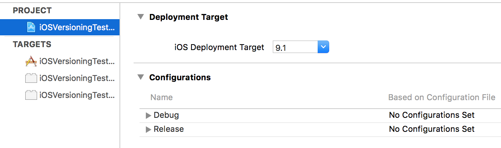
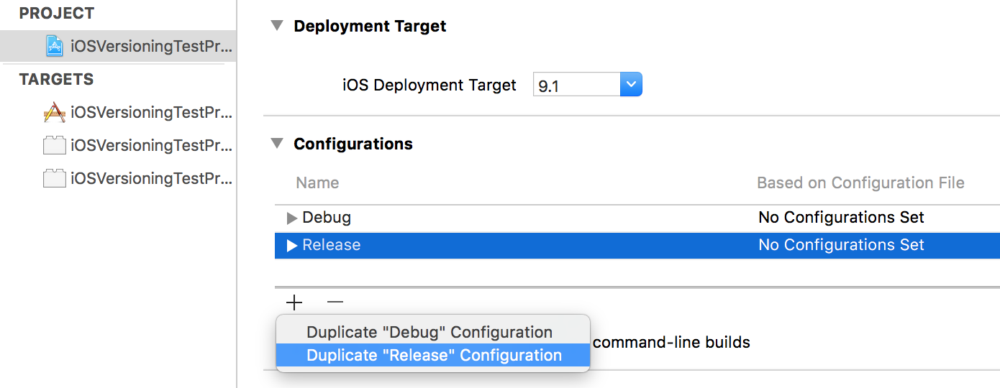
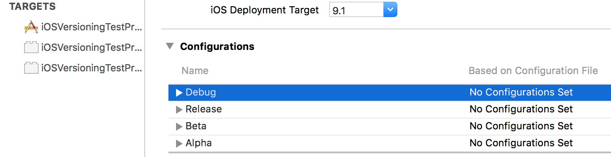
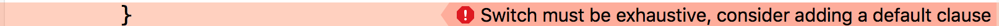

Hello CodeBugs,
So you have an app you are going to rock the AppStore with. But first you need proper versioning so you create a new Xcode project and it gives you the following two Configurations:
Debug and Release.

So now presumably you want to distribute this app via HockeyApp. HockeyApp like other app distribution services use a metaphor of alpha / beta and live apps in line with the industry's gold standard gitflow workflow
So what is Alpha/Beta/Live? Let's take this directly from the Pro's, HockeyApp documentation says this:
We highly recommend to create independent apps in HockeyApp for your development and production versions for the AppStore or Google Play. This way you can use independent bundle identifiers and both apps can run in parallel on the same device. HockeyApp offers four pre-defined release types:
alpha
beta
enterprise
store
Even if you don't use HockeyApp you would still want to have at least 3 Configurations:
alpha - builds from the development branch
beta - builds from a tag or a release branch
(App) store - builds from the master branch
Let's create the 3 Configurations:

We duplicate the Release configuration and create two new Configurations Alpha and Beta.
Here is the final result:

Wait a second mister. What is Debug doing here, and where is the store configuration?
It very simple:
Debug - for debugging purposes, creates a larger executable with more debug info (see optimization flags)
Alpha - for alpha builds
Beta - for beta builds
Release - for Store builds, but we keep it named Release.
Each of these should receive a unique CFBundleIdentifier.
As always, you may have a 3rd party service (Hockey, Mixpanel, Facebook) requiring different setup based on your release type . Up until now we used to do this:
#if ALPHA
let serviceID = "123141asd12"
#elseif BETA
let serviceID = "ae7641fdd15"
#elseif STORE
let serviceID = "gl3141asd16"
#endif
override func viewDidLoad() {
configureExternalServiceWithIdentifier(serviceID)
}
But this is error prone. You can run this source code and see that every Schema compiles except for the Debug one
We forgot to add an #ifdef DEBUG. The compiler said nothing and the error is only seen when you switch to the Debug scheme and try to compile it. Now, you most likely have ifdef's in many places in your source code so you will forget to add an #ifdef here and there causing massive trouble.
The Swift compiler to the rescue.
Swift is a safe language. If we were to have an enum with the release type that would force us to treat each app configuration, and we would always get a compilation error if we forgot to treat one Configuration.
First we declare an Enum. Swift enums allow us to add methods to them. So we add a method which tells us what the current Configuration is:
//
// ReleaseType.swift
// iOSVersioningTestProject
//
// Created by Dan Ursu on 30/11/15.
// Copyright © 2015 Dan Ursu. All rights reserved.
//
import Foundation
enum ReleaseType {
case Unknown
case Debug
case Alpha
case Beta
case Store
static func currentConfiguration() -> ReleaseType {
#if DEBUG
return .Debug
#elseif ALPHA
return .Alpha
#elseif BETA
return .Beta
#elseif STORE
return .Store
#else
return Unknown
#endif
}
}
Now, our previously unsafe code looks like this:
switch(ReleaseType.currentConfiguration()) {
case .Debug:
serviceID = "SomeID"
case .Alpha:
serviceID = "123141asd12"
case .Beta:
serviceID = "ae7641fdd15"
case .Store:
serviceID = "gl3141asd16"
case .Unknown:
serviceID = ""
}
configureExternalServiceWithIdentifier(serviceID)
Now, when we forget to treat one app configuration, the compiler will give us an error when the Switch does not cover all cases:

You can see the final source code here
PS: Keep the ReleaseType enum pure and let it only handle the release type. Don't make extensions on it for CrashLytics or GoogleAnalytics, because it will grow and and it will get a lot of responsibilities.
Also don't add code to it because the ReleaseType enum is not unit testable, the more code you add to it, the more you won't be able to test. It's not testable because you can't inject compiler flags, and even if you could, it would be a bad idea.
Question: Isn't this shifting the problem of safety to the enum? If we forget to add a case to the enum we will still have trouble.
Answer: Yes, the ReleaseType enum is still unsafe. It depends on compiler flags, so if we were to add a new Configuration + build Scheme to our app it would still fail in an obscure way. But at least we have this problem contained. The rest of our app will be safe as long as it is using this enum.